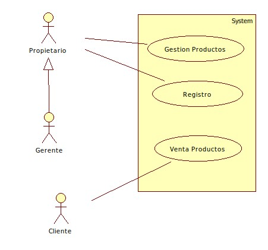

Sistema Uacemita’s Candy¶
Introducción¶
Introducción
Contexto de negocio
Antecedentes
En la tienda “Uacemita’s Candy” se dedica a vender dulces, y las ventas e inventario de estos productos se realiza de manera manual. Esto representa un problema debido a que el proceso de ventas e inventario se realiza de una manera más tardada. Es por esta razón que los socios desean exponer su catálogo de productos en un sistema que exponga el gestionamiento (altas, bajas y cambios) de los mismos a través de un servicio web para que sea consumido por una o varias aplicaciones.
Fase del problema
Los socios de la dulcería sólo llevan el control manual del inventario de los dulces que venden y que tienen a través de un cuaderno, y esto hace que ocurran errores a la hora de cuadrar los insumos reales con los que tienen anotados en la libreta.
Objetivos del negocio
ID |
Descripción del objetivo del negocio |
|---|---|
ON-01 |
Hacer que las ventas aumenten 10% |
ON-02 |
Localizar los productos más vendidos para abarrotar la tienda con dicho producto |
ON-03 |
Tener un control automatizado de productos existentes |
ON-05 |
Sacar a venta los productos con fecha próxima a caducar. |
ON-06 |
Identificar los productos con menos demanda para crear ofertas donde se puedan vender con mayor facilidad |
ON-07 |
Restringir el acceso a la gestión de productos solo a personas autorizadas |
Visión de la solución
Fase de visión
En esta aplicación tiene los siguientes propósitos:
En principio, subir las ventas de dulces con la ayuda de la aplicación.
Llevar el control de los productos de una manera automatizada.
Localizar de una manera ágil los productos con mayor demanda.
Localizar de manera ágil los productos con menos demanda para crear ofertas.
Características del sistema
ID |
Descripción |
Prioridad |
Objetivos del negocio |
|---|---|---|---|
CAR-01 |
El sistema debe permitir dar de alta nuevos productos al catálogo. |
Alta |
ON-03 |
CAR-02 |
El sistema debe permitir dar de baja un producto del catálogo. |
Alta |
ON-03 |
CAR-03 |
El sistema debe permitir consultar el catálogo de productos. |
Alta |
ON-03 |
CAR-04 |
El sistema debe permitir gestionar la venta de los productos. |
Alta |
ON-02, ON-05 y ON-06 |
CAR-05 |
El sistema debe permitir modificar las caracterísiticas de los productos disponibles |
Alta |
ON-03 |
CAR-06 |
El sistema debe permitir exponer microservicos para su consumo. |
Alta |
ON-03 |
CAR-07 |
El sistema debe permitir registrar y autentificarse a usuarios que administren la gestión de productos. |
Media |
ON-07 |
Alcance
Este proyecto consiste en crear un sistema que sea capaz de administrar y exponer los servicios de altas, bajas y cambios de productos. Este proyecto se realizará por dos desarrolladores, se planea concluir con la estructura e implementación arquitectónica para el 29 de diciembre del 2020 así como tener el sistema y documentación por completo. Para cubrir con los requisitos del sistema será necesario crear una aplicación web. La funcionalidad principal de la aplicación es la de poder presentar al cliente las diferentes funciones que se tienen disponibles sobre los productos.
Número de Entrega |
Tema Principal |
ID de las características |
|---|---|---|
1.0 |
El gestionamiento de productos |
CAR-01, CAR-02, CAR-03, CAR-04 Y CAR-05 |
2.0 |
El exponer los servicios |
CAR-06 Y CAR-07 |
Contexto del Sistema
Interesados
Nombre |
Descripción |
Responsabilidad |
|---|---|---|
Sergio Mena |
El administrador de proyecto |
Revisar cada uno de los entregables desde el inicio hacia el final |
Esperanza Romero Lobato |
Arquitecta de software, desarrolladora y analista |
Realizar el especificación, análisis, diseño de la app, diseño de la arquitecura e implementación |
Alan M. Medrano Hernández |
Arquitecto de software, desarrollador y analista |
Realizar el especificación, análisis, diseño de la app, diseño de la arquitecura e implementación |
Diagrama de Contexto
Entorno de Operación
El Cliente tendrá la posibilidad y facilidad de acceder a la aplicación desde cualquier navegador de internet, así como también contará con una base de datos en PostgreSQL y se ejecutará en un servidor web.
Información Adicional
Herramientas
Las herramientas que se utilizaron
Spring tool Suite 4
Spring Boot 2.0
StarUml
Enterprise Architect
Java openjdk 11.0.7
Bootstrap 5
PostgreSQL 11
GitLab
Git
Requerimientos de la Arquitectura¶
Drivers Funcionales
Se consideraron estos drivers funcionales debido a que son las funcionalidades principales del sistema, las cuales nos ayudarán a alcanzar los objetivos de negocio planteados y cumplen con las caracterísiticas esenciales del sistema.
ID |
DESCRIPCIÓN |
CARACTERÍSTICA ASOCIADA |
|---|---|---|
CU-01 |
Gestión de Productos. El propietario o gerente de la tienda puede realizar altas, bajas y cambios de productos. |
CAR-01, CAR-02 Y CAR-05 |
CU-02 |
Venta de Productos. El cliente puede agregar productos que se encuentren disponibles a un carrito de compra para que, posteriormente, se realice la venta. |
CAR-03 Y CAR-04 |
CU-03 |
Registro. El propietario realiza el registro de un gerente al sistema para que tenga acceso a la gestión de productos. |
CAR-07 |
Modelo de casos de uso

Elección de casos de uso primarios
La razón de la elección de estos casos de uso primarios es que cumplen con las principales funcionalidades del sistema tal cual se describió anteriormente, estos casos de uso nos ayudarán a alcanzar los objetivos de negocio planteados al inicio del proyecto.
ID |
PRIORIDAD |
JUSTIFICACIÓN |
|---|---|---|
CU-01 |
ALTA |
Es de prioridad alta debido a que el proceso de gestión de productos es fundamental para poder tener el catálogo en linea y ser consumido por el sistema de ventas para que se puedan concretar ganancias con la tienda de dulces. |
CU-02 |
ALTA |
Es de prioridad alta debido a que el sistema de ventas en linea es que dejará ganacias a la tienda de dulces. |
CU-03 |
MEDIA |
Es de prioridad media debido a que al inicio sólo tendrá acceso el propietario de la tienda de dulces a la gestión de productos. |
Drivers de atributos de calidad
Los atributos de calidad que se muestran a continuación se obtuvieron utilizando, principalmente, dos métodos:
Goal Question Metric
Lista de Supuestos
ID |
CATEGORÍA |
ESCENARIO |
PRIORIDAD |
|---|---|---|---|
EC1 |
Seguridad |
El dueño de la tienda de dulces desea incorporar a su sistema en desarrollo un módulo de autentificación para realizar la gestión de sus productos a el personal autorizado.
|
ALTA |
EC2 |
Usabilidad |
El cliente hace una compra exitosa de los productos a través del sistema de compras de la tienda Uacemita’s Candy sin que el sistema muestre a lo más cuatro pantallas.
|
ALTA |
EC3 |
Performance |
Si hay 100 clientes simultáneamente queriendo realizar una compra, el de respuesta debería ser menor que un segundo bajo condiciones normales
|
ALTA |
EC4 |
Disponibilidad |
El propietario requiere que el sistema de ventas esté disponible 99% del año.
|
ALTA |
Anexos
CU-1: Gestión de Productos
Resumen y Objetivos
Se realiza la alta, bajas y cambios de productos del catálogo de la dulcería “Uacemita’s Candy”.
-Diagrama
Actor/es
Propietario o Gerente de la tienda de dulces.
Caso de uso relacionado
Ninguno.
Precondiciones
Se debe contener la información del producto que se desea dar de alta, modificar o dar de baja.
Secuencia
Curso Principal: Alta de Producto
# |
Evento desencadenate |
Respuesta del sistema |
|---|---|---|
A1 |
El propietario desea registrar un producto |
Muestra los campos a ingresar para registrar un producto |
A2 |
El propietario ingresa los campos y registra el producto |
Muestra un mensaje en pantalla y actualiza el catálogo de productos |
Postcondiciones
El sistema mostrará la actualización en el catálogo de productos que observa el consumidor.
El sistema mandará un mensaje de que el producto se registró.
Flujos Alternos
Modificar un producto
Eliminar un producto
CU-2: Venta de Productos
Resumen y Objetivos
Se realiza una venta de algún producto de la tienda de dulces “Uacemita’s Candy”.
Diagrama
Actor/es
Cliente
Caso de uso relacionado
Ninguno.
Precondiciones
El consumidor tiene en mente los productos a comprar.
Secuencia
Curso Principal: Alta de Producto
# |
Evento desencadenate |
Respuesta del sistema |
|---|---|---|
A1 |
El cliente desea comprar un producto |
Muestra el catálogo de productos. |
A2 |
Mientras el cliente agregue productos |
Actualiza la lista de productos del carrito e incrementa el total de la venta. |
A3 |
Realiza la compra |
Muestra el total de los productos del carrito de compras |
Postcondiciones
Se muestra el total de la compra.
Flujos Alternos
Eliminar un producto
CU-3: Registrar
Resumen y Objetivos
Agregar al sistema un Administrador que tenga permisos de gestionar los productos de la dulcería «Uacemita Candy’s»
Diagrama
Actor/es
Propietario/Gerente
Caso de uso relacionado
Ninguno.
Precondiciones
Ser el propietario o gerente de la tienda.
Secuencia
Curso Principal: Alta de Producto
# |
Evento desencadenate |
Respuesta del sistema |
|---|---|---|
A1 |
El propietario o gerente requiere agregar un nuevo administrador de productos |
Muestra los campos para registrar al nuevo administrador |
A2 |
El propietario agrega los campos y registra al administrador |
Muestra que se registró el administrador |
Postcondiciones
Se muestra que se registró el usuario.
Flujos Alternos
Eliminar un administrador.
Diseño de la Arquitectura¶
Para el diseño de la arquitectura de software se eligió el modelo arquitectónico 4+1
Vista Lógica
En la vista lógica se realizaron los diagramas de clases y los diagramas de secuencia respectivos de la funcionalidad del sistema.
Diagrama de Módulos
Se realizo un diagrama de módulos divido en dos partes, la primera que es la parte del sistema que ofrece el servicio (se encuentra pintado de verde) y el segunda parte es del sistema que lo comsume, en este caso es el que utilizará el dueño debido que le permitirá la gestión de productos.
Diagrama de Objetos
Se realizaron dos diagramas de objetos. El primero es el diagrama de objetos del sistema que provee el microservicio, el segundo es el diagrama de objetos que se utilizará en el sistema de ventas.
Digrama de objetos del sistema que provee el microservicio.
Diagrama de objetos del sistema de ventas.¶
Vista de Desarrollo
En la vista de desarrollo se realizó el diagrama de componentes y el diagrama de paquetes.
Diagrama de Paquetes
En esta parte se muestran tres diagramas: el primero representa a la parte de los microservicios, el segundo a la parte de la venta de productos y el último para la gestión de productos.
Diagrama de Componentes
Se muestra el diagrama de componentes general del sistema.
Vista de Proceso
Se realizaron dos diagramas de actividad. Las actividades plasmadas en los diagramas son las siguientes: gestión de productos y venta de productos.
Diagrama de Actividad
Vista Física
En esta vista se incluye el diagrama de despliegue de la aplicación.
Diagrama de Despliegue